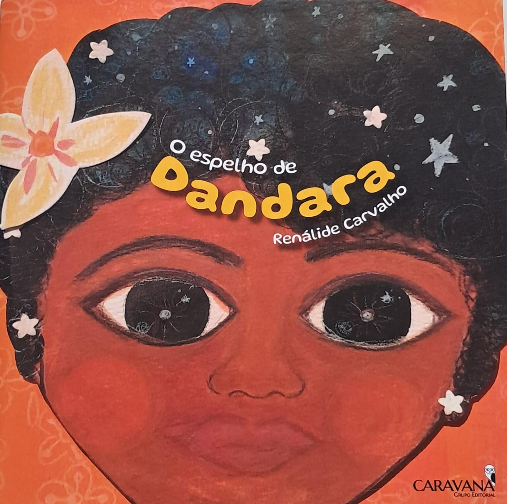

O espelho de Dandara

Dandara era uma linda criança. Ela era pretinha como a noite, seus olhos brilhavam como as estrelas do céu e de seu sorriso emanava uma paz gigante, que enchia a casa e o coração de seus pais. Tudo nela era luz: seus lindos lábios, rosados e carnudos, seu nariz redondinho, seus dedinhos, tão pequeninos, seus belos cabelos crespos, que mais pareciam uma coroa, sua viva inteligência e sagacidade.
Ela fora uma menina muito desejada pela mamãe e pelo papai, que planejaram seu nascimento bem antes dela sonhar em pisar na terra. Sua mãe, uma mulher negra, alta, de olhos arredondados e voz altiva, era uma advogada muito inteligente e bem sucedida, que passou por inúmeras dificuldades na infância e na adolescência até chegar a ser a mulher empoderada e dona de si que se tornara.
Teve que trabalhar duro e estudar bastante, desde muito cedo, para ajudar a custear as despesas de sua família, já que sua mãe, a vovó de Dandara, tivera muitos filhos e fora abandonada pelo marido, como acontece com tantas mulheres do nosso Brasil, que precisam se desdobrar em mil e uma para dar conta de cuidar de suas crias e sustentar os seus lares. Mas essa já é uma outra história, que, como diria minha vó, tem muito pano pra manga.
...
Pois é, minha querida leitora e meu querido leitor, como eu ia dizendo lá no começo, Dandara era muito bem cuidada, seus pais a ensinaram, desde pequenininha, a amar seus cabelos, a cor da sua pele, seus lábios, seus olhos, seu jeitinho luz de ser. Criada numa família dessas, é muito natural que Dandara demonstrasse ser uma bebê cheia de vida e alegria, de uma energia contagiante e colorida, de olhos vívidos e brilhantes. Vivia na felicidade e no aconchego da sua linda família pretinha, que era seu quilombo, seu lugar de comunhão e afeto.
Ela foi crescendo nesse ambiente saudável e se tornando uma criança confiante. Passou pela educação infantil e sua mãe e seu pai achavam-se sempre satisfeitos com as escolas e com o desenvolvimento de sua filha. Até ali, só motivos para comemorar: a saúde, a alegria, os aprendizados e o crescimento saudável de Dandara. O tempo foi passando, passando, até que chegou o grande dia, o dia em que ela iria para o ensino fundamental. A menina estava tão ansiosa que acordou antes da mãe e do pai, tomou banho, vestiu a farda, e já estava indo para a cozinha tomar café, quando ouviu Tulipa gritar: – Carlos, a Dandara não está no quarto! Para onde foi essa menina? Já está quase na hora de ir para a aula! Foi aí que Dandara gritou: – Papai, mamãe, estou na cozinha!
Seus pais correram e tiveram uma alegre surpresa, viram a sua filha mais linda do que nunca, toda preparada para ir à escola. Agora, ela não era mais aquela bebê, não iria mais para o ensino infantil, iria para o ensino fundamental. Ela amava dizer isso: – Mamãe, eu vou para o ensino fundamental, isso é sensacional!!! E riam muito da rima: fundamental-sensacional, fundamental-sensacional... E quase não paravam de dar gargalhadas.
Dandara esperara tanto por aquele momento. Estava tão ansiosa que, um mês antes, elas já haviam saído para comprar mochila, cadernos, estojo, lápis de pintar, borracha, tênis, calça jeans, fardamento, meia, livrinhos, canetas de marcar textos. Estava tudo tão cheiroso, tão novinho, ela não via a hora de conhecer seus colegas, professoras, brincar no pátio, explorar os ambientes da escola, lanchar com os coleguinhas, divertir-se e aprender bastante. Enfim, era uma vida nova que ela sentia se aproximar.
Seus pais a deixaram na porta da escola. Seus corações pareciam pequenininhos, de tão apertados, igualzinho no dia em que ela fora à creche pela primeira vez. Dandara, porém, seguiu confiante junto à professora e às outras crianças. Ela estava tão emocionada, sentia-se muito importante, era memorável estar ali! Tudo corria bem e ela imaginava que seria maravilhoso seu novo ciclo escolar. Porém, aquela ideia de tudo ser incrível ficou só na cabeça, pois, mal o ano começou, ela já experimentou o gosto amargo de ser discriminada na escola por seus próprios coleguinhas. Tudo isso acontecia com a omissão e, muitas vezes, até com uma certa concordância velada das pessoas que trabalhavam na escola, infelizmente.
Dandara começou a voltar da escola cada vez mais triste, aquela alegria do início se transformara em desânimo. Tulipa percebia que sua filha chegava e não queria mais falar nada sobre o seu dia na escola, estava tão cabisbaixa e apática... Sem suportar mais ver sua filha daquele jeito, chamou-a para conversar.
Dandara estava tão decepcionada e magoada que, logo, as lágrimas correram de seus belos olhos de jabuticaba. Foi então que disse soluçando: – Mamãe, eu não quero mais ir para aquela escola, meus coleguinhas me xingam, dizem que não querem brincar comigo, que meu cabelo é feio, falam mal da cor da minha pele, zombam de mim. Eu não aguento mais! ...
Autora Renáli Carvalho - É escritora paraibana, nascida em Jacaraú, no ano de 1983. Autora da obra Poemas a vapor (2007), tem poemas publicados nas coletâneas II Coletânea de Poesia, Cordel, Contos e Crônicas do IFPB (2022) e Engenho Arretado: Poesia Paraibana do Século XXI (2023). É docente de língua portuguesa do IFPI, no Campus São Raimundo Nonato, onde compõe o Núcleo de Estudos Afro-Brasileiros e Indígenas. Mulher negra, é também atriz e ativista do Movimento Negro, doutoranda em antropologia pela UFPB, mestra em formação de professores da educação básica pela UEPB, graduada em letras pela UFPB e direito pela Unipê-PB.